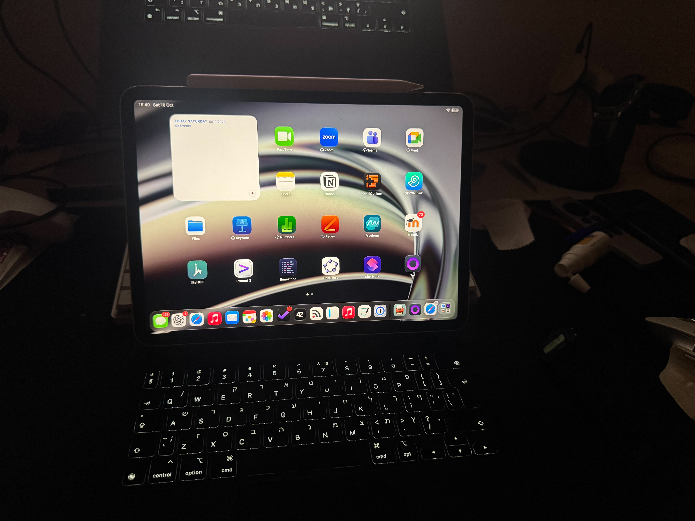

iPad Pro M2
מה שדווקא הפתיע אותי
לאחר שבוע של לימודים, שמתי לב כי רוב הקורסים שנרשמתי אליהם (חוץ מקורס זה, באופן משעשע) הם קורסים בהם נדרש בעיקר לרשום את מה שכתוב בהרצאה. אחרי חיפוש אפשרויות וגב כואב מנשיאת המחשבים האחרים, החלטתי פשוט לקחת לרוב ההרצאות טאבלט עם מקלדת, ולהקליד הכל בגרסת iPadOS של התוכנה OmniOutliner. הגב שלי מודה לי!
מפרט
- דגם
- iPad Pro
- מעבד
- Apple M2
- אחסון
- 128 GB
- מקלדת
- Magic Keyboard
- מערכת הפעלה
- iPadOS
